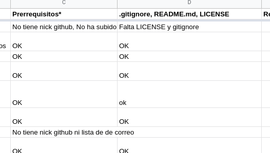

+ buenas prácticas: revisión de
código, búsqueda fácil de copieteo, y el propio uso de
git.
Pero...
La corrección era manual

Lo
que está hecho, está hecho
2017 📅 Tiempo de cambios
Toda la información necesaria para testear un
proyecto está en
El cuerpo del pull request
El README.md
GitHub
Algún fichero adicional de
configuración
Si GitHub lo sabe
Que GitHub lo testee
Analiza el PR: Perl FTW
my $repo = Git->repository ( Directory => '.' );
my $diff = $repo->command('diff','HEAD^1','HEAD');
my $diff_regex = qr/a\/proyectos\/hito-(\d)\.md/;
my $github;
SKIP: {
my ($this_hito) = ($diff =~ $diff_regex);
skip "No hay envío de proyecto", 5 unless defined $this_hito; my @files = split(/diff --git/,$diff);
my ($diff_hito) = grep( /$diff_regex/, @files);
say "Tratando diff\n\t$diff_hito";
my @lines = split("\n",$diff_hito);
my @adds = grep(/^\+[^+]/,@lines);
is( $#adds, 0, "Añade sólo una línea");
my $url_repo;
if ( $adds[0] =~ /\(http/ ) {
($url_repo) = ($adds[0] =~ /\((http\S+)\)/);
} else {
($url_repo) = ($adds[0] =~ /^\+.+(http\S+)/s);
}
Scraping FTW
sub closed_issues {
my ($user,$repo) = @_;
my $page = get( "https://github.com/$user/$repo".'/issues?q=is%3Aissue+is%3Aclosed' );
my (@closed_issues ) = ( $page =~ m{<li\s+(id=.+?)}gs );
return @closed_issues;
}
sub closes_from_commit {
my ($user,$repo,$issue) = @_;
my $page = get( "https://github.com/$user/$repo/issues/$issue" );
return $page =~ /closed\s+this\s+in/gs ;
}
const milestones = await github.issues.listMilestonesForRepo( { owner: user, repo: repo } )
if ( ! milestones.data.length ) {
core.setFailed("❌ There should be at least one milestone")
}
const minMilestones = +core.getInput('minMilestones')
if ( minMilestones && milestones.data.length < minMilestones ) {
core.setFailed( "❌ There should be more than " + minMilestones + " milestone(s)");
}
var totalIssues = 0
var totalClosedIssues = 0
milestones.data.forEach( async function( milestone ) {
totalIssues += milestone.open_issues + milestone.closed_issues
totalClosedIssues += milestone.closed_issues
})
console.log( "✅ There are " + totalIssues + "
issues in your milestones and " + totalClosedIssues + "
closed issues ")